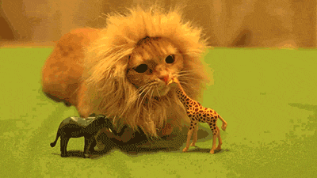

TODAY 28 | TOTAL 10720

저는 누가바를 좋아하지만 바밤바는 딱히 취향이 아닙니다 하지만 누가바밤바라는 이름이 귀여워서 닉네임을 누가바밤바로 선택했어요 맛은 누가바와 누크바가 짱입니다.
누가바냥
˚✧₊⁎( ˘ω˘ )⁎⁺˳✧༚
Updated news
사진첩 저는 누가바를 좋아하지만
게시판 바밤바는 노취향입니다
사진첩 누가바밤바가 귀여울뿐
게시판 누가바와 누크바가 최고
Mini room
